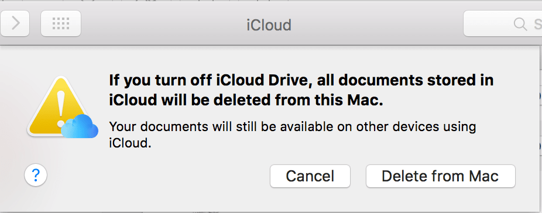
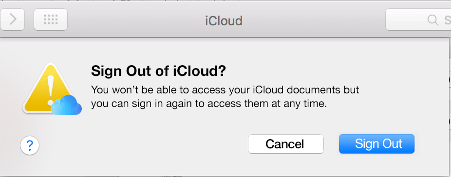

As of El Capitan Version 10.11.6, if you go to iCloud and click on “Sign Out” the following alert will open:

I have some problems with this alert:
- The tone used is confronting when it shouldn’t be.
- As a result it doesn’t help guide the user in achieving their goal.
- The primary action button doesn’t match the preceding action button. This alert opens when the user clicks on “Sign Out”. Therefore the end action should be “Sign Out” not “Delete from Mac”.
- Opting out of the process by clicking “Cancel” feels like the safer option when it ought to feel secondary.
- The first sentence starts with a conditional “if”. There’s nothing inherently wrong with this however there are many better ways to start a sentence.
- There is no mention of retrieving these “Deleted” documents.
- Using the word “Delete” in the action button. The word “Delete” isn’t even used when deleting documents (Move to Trash, Empty Trash are used instead) making it even scarier.
- more things (like why does it even need to exist?).
It almost feels like this wording was chosen to discourage users from signing out of iCloud. And that is not cool. Out of the two buttons, I feel much safer click on “Cancel”.
So I reckon the whole thing should just say:

Nicer right? I would much prefer to see this. I have the peace of mind knowing that I can access my documents again at any time.
It’s obvious Apple has a vested interest in having more iCloud users ( 🤑) but I’m not interested in that.
For what it’s worth, I like using iCloud for Notes. It’s great. But this alert makes me sad.
TL;DR: Don’t scare or bully your users into taking certain actions. Help them accomplish what they set out to do.